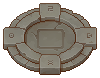

Choose a mode
Main game
Single player against the bot. A three-second countdown, ten units, two commander powers, and the first castle to fall loses. Save a replay when it's over.
Start a match →Network game
Create a room on the lobby server and face a networked AI that only sees what its side could fairly see. Bring your own bot over WebSocket.
Open the lobby → Needsnpm run server

Sandbox
A testing ground with the same map and unit rules as a match. Spawn units, set up matchups and watch how they fight, without a clock or an opponent.
Open the sandbox →How it plays
Build, then recruit
Click a building card to unlock its units, then recruit from the cards. Each recruitment starts a cooldown that grows with your army; losses shorten it.
Harvest to fund the war
Harvesters gather resources on their own. Field at most two, and guard them: a destroyed harvester pays an 80 bounty to the enemy.
Hold the pads
Keep units on the objective pads to launch missile strikes at the enemy base. Ten units is the cap, so every slot counts.
Commander powers
Turret drops a short-lived gun emplacement. Ion Cannon flattens a whole area after a blast sequence, your own units included.
- Q W
- Commander powers
- F
- Dismiss the selected unit
- Esc
- Pause, or cancel a power
- Click
- Select, move, attack
Documentation
For players who want the details and developers who want to build on it.
Unit wiki
Every unit's stats, damage and matchups, generated from the game's live unit data.
Overview
Running it locally, the full rules, unit cap, cooldowns and commander power numbers.
Game systems architecture
The scene loop, the systems container, players, buildings, units and the command hub.
Replays
How a match is recorded as commands and ticks, and the determinism rules that keep it in sync.
Network game
Running the lobby server, adding a networked AI, and how the browser and bot fit together.
Network protocol
Every message with an example payload, plus a checklist for writing your own bot.
Roadmap
What's done and what's planned, eventually.